← 返回阅读库 · 原论文目录
论文讲解阅读文档 · 新模型 · v064
MnasNet Platform-Aware Neural Architecture Search for Mobile[1807.11626]
视频时长 00:07:54；讲解文字 3,606 字符；提取讲解画面 27 张。按视频原顺序阅读，每段文字保留时间戳。
文字来自整段视频的自动语音转写，按自然停顿分段，并与 PPT / 论文页面 / 演示画面对齐。未将讲解压缩为摘要；术语、数字和口述公式请结合画面及原论文核对。 阅读稿已校正规范部分明确术语误识别；原始逐字稿和每处修改记录另行保留。
讲解画面为源视频截图（640×360），不是可编辑 PPT 文件。全片按每秒 2 帧扫描内容变化，逐步展开页保留；连续动画保留代表画面。清晰度受源视频限制。
下载完整资料包 · 含离线 HTML、PDF、Word、全部 PPT 画面和字幕。
原论文与材料
MnasNet: Platform-Aware Neural Architecture Search for Mobile · 下载完整 PDF（9 页）
按时间阅读
00:00:00–00:00:30 · 画面 001
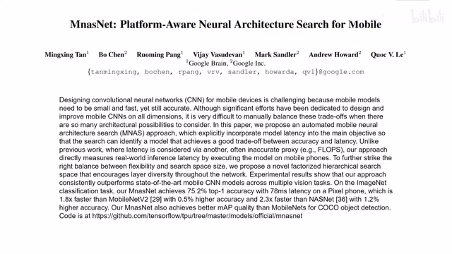
00:00:00–00:00:30 · 画面 001大家好,今天我们来迅速说一篇论文 MnasNet Platform-Aware Neural Architecture Search for Mobile 这篇论文是 MobileNet v3 的最后一篇前置讲完它,我们就可以介绍 MobileNet 然后再可以介绍 EfficientNet 我们就终于赶上时代了本文的思想也非常简单在我们长久设计 MobileNet 的实验中我们领悟到一件事人类设计网络结构的能力是有极限的那你到底想说什么呢？我们呢，就是想找到一个网络，它能够在我们模型的预测的准确性和它预测一张图像使用的时间这两个项目之间呢，做一个好的平衡，做一个好的 tradeoff。完事呢，我们只要设计一个好的 loss function，或者我们应该叫 target function，交给机器让它去找一个好的网络结构那就可以了。那么这里呢，我们先看到作者设计的这个 target function。
00:00:30–00:01:18 · 画面 002
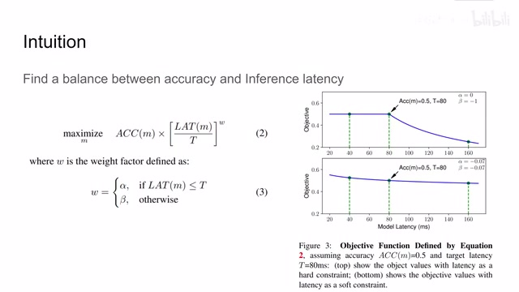
00:00:30–00:01:18 · 画面 002ACC 表示它的预测的准确率，LAT 就表示它的 Inference Latency。那么为什么要使用 Inference Latency 呢？它跟我们传统的计算量等等都不一样。这里做的就是说，我们直接找一台手机，把这个模型放上去跑一下那就行了嘛，也不要计算说我这个模型里面到底有多少运算量，算出来又跟实际手机运行的时间又不准。那么这个就是本文的两大核心贡献之一，也就是构建了这么一个 Loss Function。
00:01:18–00:01:19 · 画面 003
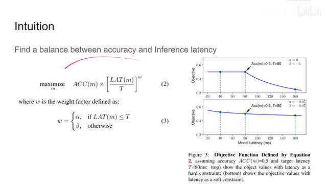
00:01:18–00:01:19 · 画面 00300:01:19–00:01:30 · 画面 004
00:01:19–00:01:30 · 画面 004我们希望它的值最大这个 t 呢是我们目标的这个模型的延迟大概是多长时间 w 呢就是这个权重你当然可以通过 tune 不同的 alpha 和 beta 来选择这个整个函数的形状那么这边呢我们看到如果说准确率去到 50%0.5 那么 t 去到 80 我使用不同的 alpha beta 它做出来可视化的样子是什么样的那么这个呢就是本文的第一个核心贡献啊我有一个 loss function
00:01:30–00:01:31 · 画面 005
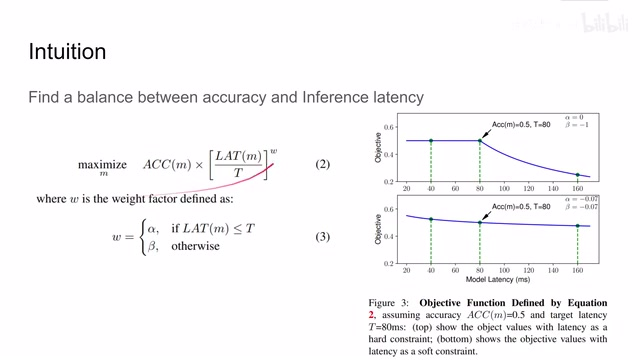
00:01:30–00:01:31 · 画面 00500:01:31–00:01:35 · 画面 006
00:01:31–00:01:35 · 画面 00600:01:35–00:01:36 · 画面 007
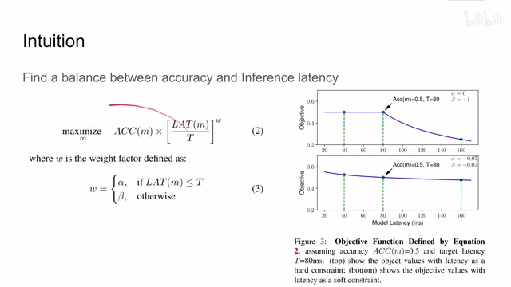
00:01:35–00:01:36 · 画面 00700:01:36–00:01:48 · 画面 008
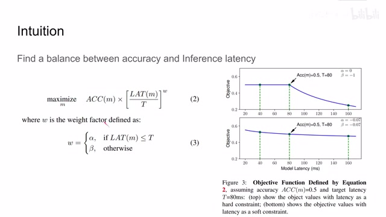
00:01:36–00:01:48 · 画面 00800:01:48–00:01:49 · 画面 009
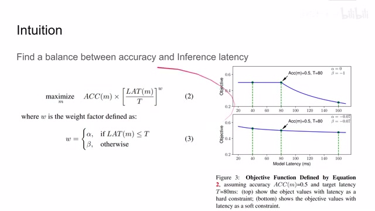
00:01:48–00:01:49 · 画面 00900:01:49–00:01:57 · 画面 010
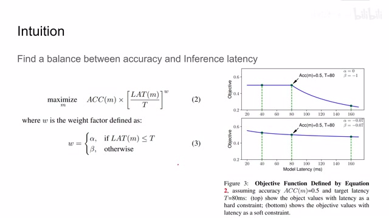
00:01:49–00:01:57 · 画面 010我们让这个机器按照 loss 方式去优化我们的模型设计就可以了。那么我们要怎么样优化就模型设计呢？你想，我们一个传统 CNN 它有几十上百层，那么难道我要一层一层决定这里面每一层应该怎么设计吗？那显然不是这样的。这里作者就使用一个叫 hierarchical search space，那么具体来说就是我的一整个模型，我给它分成一个个的 block。
00:01:57–00:02:13 · 画面 011
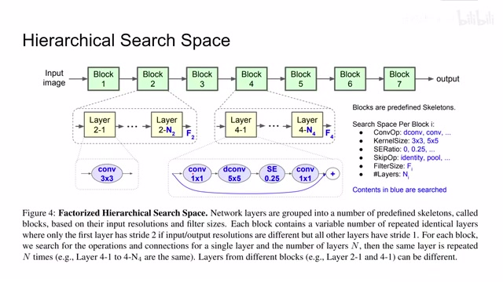
00:01:57–00:02:13 · 画面 01100:02:13–00:02:15 · 画面 012
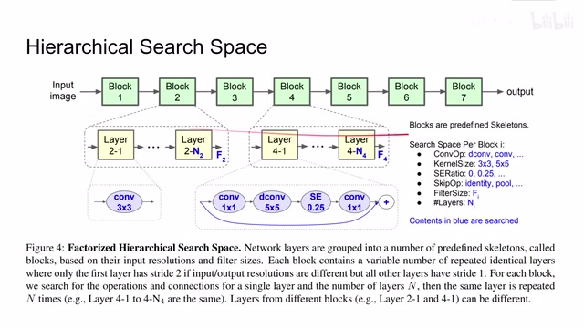
00:02:13–00:02:15 · 画面 01200:02:15–00:03:38 · 画面 013
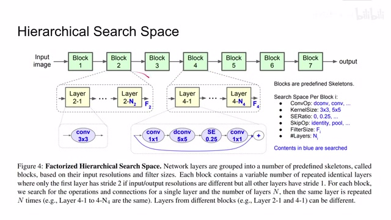
00:02:15–00:03:38 · 画面 013那么每个 block 里面它是不同的 layer 做重复。那么这些 layer 它们的尺寸是完全一致的。所以说我只要搜索每一个 block 里面它的参数就可以了。而 block 里面就是相同的 layer 重复了很多次。那么在看这个 layer 里面我们有哪些工具可以选，比如说我们要做的 convolution 它的操作，它是正常一个 convolution 还是像那个 mobile net 里面是 depthwise 的 convolution，它的 kernel size 是多大呢？
它的 SE Ratio 是多大的？SE 代表 Squeeze and Excitation。那么这篇工作其实就是 Channel-wise 的 Attention，也就是说它额外的开辟一条 Path 来计算每个 Channel 之间的 Attention。而在额外开辟的 Path 中它有一个 BottleneckBottleneck 相对于原来 Channel 的数量就是这个 Ratio。
那 0 呢表示我 bottleneck 呢只留一个数字。那么这里呢，我默认呢你已经熟悉了 SENet 的主要的思想。那么如果有很多朋友表示不熟悉，需要讲的话，我们可以后续考虑出一个视频来讲一下这个网络它的应用呢还是很广泛的。那么再下点，我们想看到这个 skip connection 它是直接的连过来还是要做一个 pool 等等。那么最后呢，包括我们的 convolution，每个 convolution 里面它有多少个 filter，还有呢我们这个 layer 里面它叠多少层？
这些都是值得我们去搜索的。那么更具体来说，我们模型是在 MobileNet v2 它作为 baseline 在上面搜索的，每次搜索的时候我们就看我们是要在模型我们是要维持 block 里面的 layer 不动吗，加一层还是减一层，每个 layer 的 filter size 我是要给它扩大 1.25 倍还是减少 25%等等等等。
00:03:38–00:04:53 · 画面 014
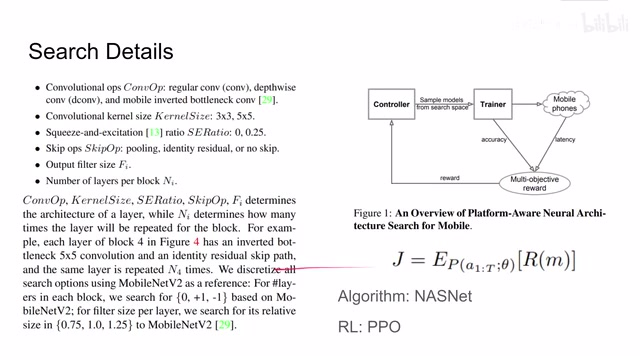
00:03:38–00:04:53 · 画面 014这些就是它如何从 MobileNet v2 逐渐出发开始搜索这么一个过程，那么既然是一个模型的搜索，你每次提出一个新的模型结构，拿去训练它得到一个准确性，然后放到机器上直接跑一下得到它的延迟，最后我们把这个准确性和延迟加起来算我们的 target function，那么根据这个 target function，我们再对我们的模型结构进行调整，那么很显然你可以使用一个自由化的方法去做这个事情但是作者说在之前的工作 NASNet 里面，我们是使用 reinforcement learning 的方法来帮助我们去找网络的结构，那么定义 reinforcement learning 的问题就是我们一个模型产生的 reward，也就是我们之前的 target function，使这个 target function 变得最大，那么它使用的 reinforcement learning 的方法是 PPO
具体的结构呢，也可以看到这个 controller 是一个 RNN base 的这么一个网络，它呢还是产生一个模型，然后交给我们的 trainer 去训练，训练好了之后呢，评估一下它的准确性，交到我们实际的设备上呢去评估一下它的运行需要的时间，那么最后呢得到这个 reward，反过来再做我们下一步的 RL 就可以了，那么这里呢还是我们默认呢你已经了解 NASNet 它的大致的核心的思路
00:04:53–00:05:05 · 画面 015
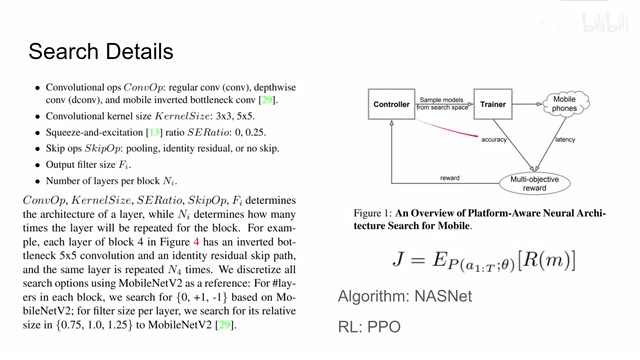
00:04:53–00:05:05 · 画面 01500:05:05–00:05:23 · 画面 016
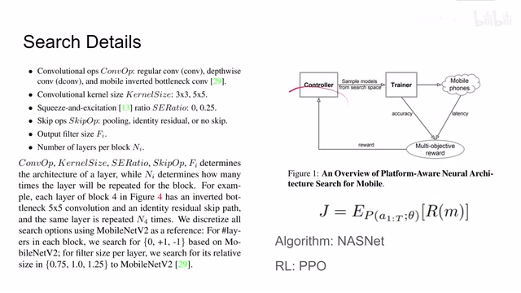
00:05:05–00:05:23 · 画面 016那如果你对这方面不熟悉，而且有很多朋友表示需要讲一下这个论文的话，我们可以考虑后面讲一下这篇论文，那么最后就看有了我们的 target function，就是这个 reward，有了我们这个搜索的方法，我们最后搜出来一个什么东西吧，那么这个呢就是本文搜索出来的 MnasNet，你可以看到它的网络结构呢是如图显示的这个样子，那里面呢像这个 separate convolution 呢，这个我们在 MobileNet v1 里面就介绍了，这个呢是 MobileNet v2
00:05:23–00:05:25 · 画面 017
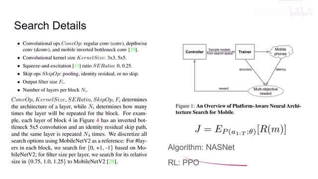
00:05:23–00:05:25 · 画面 01700:05:25–00:05:27 · 画面 018
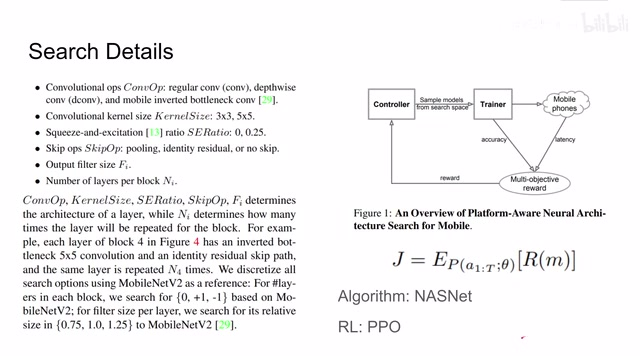
00:05:25–00:05:27 · 画面 01800:05:27–00:05:54 · 画面 019
00:05:27–00:05:54 · 画面 019这个是 MobileNet v2 再加上我们的 Squeeze and Excitation，经过这样一种神奇的组合，它达到的效果是最好的，你说如果有人手工设计出这个东西来，那确实是有点不太可思议，那么我们来看这样的一个模型它的性能表现如何，肯定经过搜索，本文提出的方法性能表现是相当可以的，横轴是我们的延迟，纵轴是准确率，可以看到它肯定是 outperform 之前的这些方法的
00:05:54–00:05:55 · 画面 020
00:05:54–00:05:55 · 画面 02000:05:55–00:06:22 · 画面 021
00:05:55–00:06:22 · 画面 021那么这里所谓的讨论，如果说我把我们所有的 convolution 都换成了这样的东西，虽然它的性能能够得到小小的提升，甚至大部分情况下都是大幅的下降，但是跑这个模型的时间就变长了，那么再往下是在 ImageNet 上对比了不同深度的这么一个模型，也就是说通过加减 layer 的数量来评估这个模型的表现，可以看到本文的方法也是 outperform mobile net 的
00:06:22–00:07:06 · 画面 022
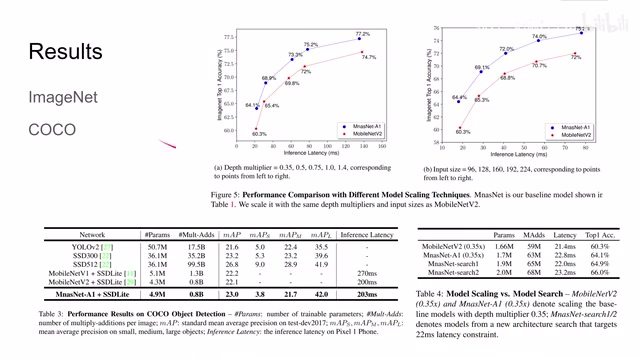
00:06:22–00:07:06 · 画面 022这里对比的 input size 也就是每一层的 resolution，那么可以看到结果是相似的，这里是 coco 数据集一些美好的数字等下对比一下，这本书实验也很有意思，如果你想有一个新的条件约束比如说原来是希望在 70 毫秒内解决问题，现在需要是在 22 毫秒内解决问题，你缩放 MnasNet 固然能够得到一个好的结果，但是你如果去做一个搜索的话性能还会提升更多，相比之下直接收缩 MobileNet 效果就不是那么好了，比如说 Squeeze and Excitation 它是非常重要的，没有它性能就下降，那么还有这里对比了本文提出的两大贡献，一个就是它的 Objective Function
00:07:06–00:07:09 · 画面 023
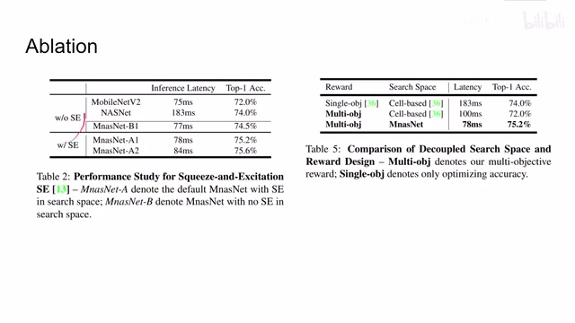
00:07:06–00:07:09 · 画面 02300:07:09–00:07:10 · 画面 024
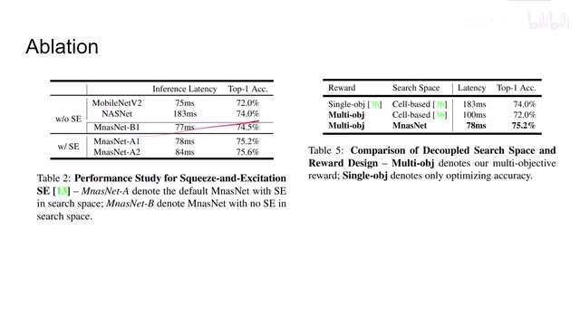
00:07:09–00:07:10 · 画面 02400:07:10–00:07:41 · 画面 025
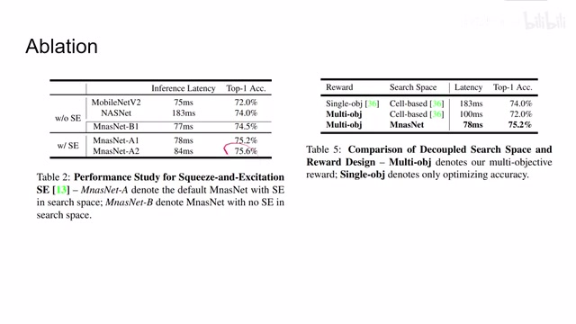
00:07:10–00:07:41 · 画面 025我们这里不仅要评估准确性，还要评估它的 inference time，那么使用这样不同的 object 会带来什么样的影响，还有是使用的推理方法 36 就是 nasnets，它是 cell-based 的方法，跟本文的 hierarchical 的方法相比，它们搜索出来的结果来对比，所以总的来说，本文是非常暴力的通过了实机的运行大量的模型的搜索，因为我们找到了一种效率很高的模型，它的结果就长了这个样子
00:07:41–00:07:53 · 画面 026
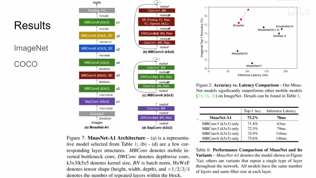
00:07:41–00:07:53 · 画面 026里面也是包括了很多前人的工作，高情商的讲法是一种集大成者。如果你对这篇论文感兴趣，非常推荐你去看一下原文。那么感谢您的收看，再见。
00:07:53–00:07:54 · 画面 027
00:07:53–00:07:54 · 画面 027转写与来源说明 · 0 个自动复核提示
保留 19 个原始语音片段，0 个片段触发自动复核提示。提示仅用于定位可能的术语、重复或识别问题，不等于已确认错误。
讲解画面为源视频截图（640×360），不是可编辑 PPT 文件。全片按每秒 2 帧扫描内容变化，逐步展开页保留；连续动画保留代表画面。清晰度受源视频限制。
原视频：paper/合集_2026-10-16_新模型/[论文简析]MnasNet Platform-Aware Neural Architecture Search for Mobile[1807.11626].mp4
SHA-256：b456bf52fe463784949d238407ad24050f373f649ea76f80ca2f35e47cc24950
全文按视频语音与画面制作。原论文可从上方链接下载；完整资料包保留全文、原始逐字稿、字幕和校对记录。